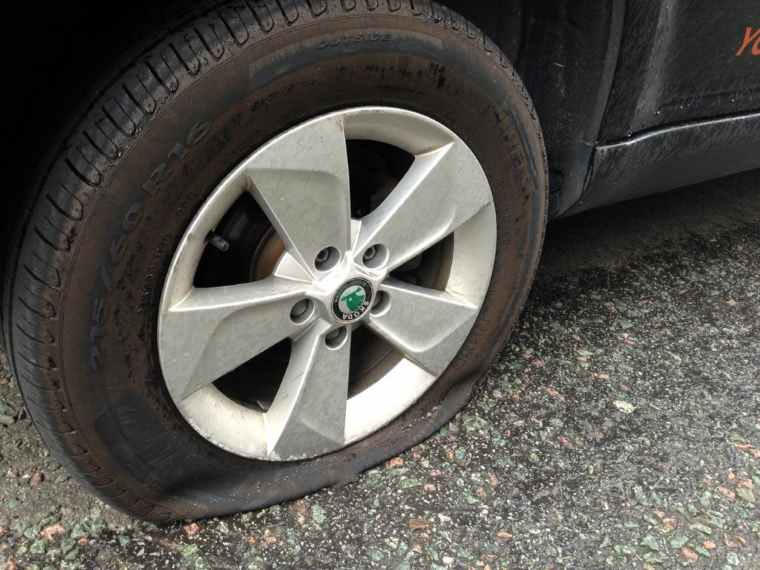

Because it causes more people to claim and it helps nobody.
Your wheel appears to be extremely faulty
he had a couple of posts that were from a very villagery mindset
do you want me to try to find the point where I changed my read on him or can you search it up in my Iso for yourself
can you do that for me?
Even if I TR him I still wouldn’t trust a red check from Seth.
He’s nearly got a V mislynched before by claiming a fake red and not rescinding before the EoD, so unless I see him flipping BM, then I’m not going to TDome you/Marshal/Kyo.
2 Likes
Evils please don’t kill KyoDaz. The guys amazing.
1 Like
marshal did you even try to ISO me before you dropped everything for this
yes.
I did
twice
1 Like
Yes, I know this sounds like a wolfy discredit, but after a game with Seth then I’m never taking his mech info at face value again.
2 Likes
Do we have 4 Blood Mage claims now?
who tf knows what drybones is claiming
P sure that no.
the first one wasn’t super well-explained but his mindset during the conversation felt townie and the things he was thinking of felt more like the sort of things town would think of than scum (but if you’re trying to read katze I’d recommend reading that whole interaction)
the second one is explained in the linked post
this wouldn’t have even been a “drop everything” thing if i could have gotten 1 reason why kat’s town
have i not claimed town yet
that might have helped you
| Person | Wheel Lands |
|---|---|
| Wiisp | 2 |
| Kyo | 2 |
| Marshal | 1 |
| Italy | 2 |
| Alice | 1 |
| Sulit | 1 |
| Braixen | 1 |
Analysis, I think the Wheel is trying to tell us that everyone with 2 lands are scum.

2 Likes
I have a question. If katze thought I was softing IC why didn’t he just keep it in wolf chat and kill me?
Was the “soft” really that obvious?